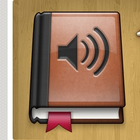

Merge MP3 Files with the "cat" Unix Command

I enjoy listening to audio books, and wanted a way to mash all of those three-minute tracks together. It's a multi-step process, but worth it to narrow down the number of files. Here are the steps I take:
- I organize all of my MP3s into nicely named folders, like "Chapter 1". Tricky, I know.
- Now, you should remove all the ID3 tags (the meta data inside each MP3 that has the Title, Artist, etc). I use my favorite ID3 tag editor - Media Rage. In the Data Remover tool, just set the MP3 ID3v2 and ID3v1 tag to "None", and process all of your nicely named/organized MP3s.
- Now go through the step explained on this page. Basically, cd into each directory, and then run that happy "cat" command. If I continue our example, I'd go with "cat * Chapter01.mp3". Avoid spaces in the file name (I don't want to go into escaping spaces). Do that with each folder you want combined.
- You're done, but I'd go through and move each of your new files into a folder, and go back and re-add ID3 tags. Again, use Media Rage. It's awesome (especially at this point, where it can read the file names, and put them into the ID3 tags automagically. Yes. It's magic.)
Or, you could do it a different, super simple way, and pay $6 for the great OS X application Audiobook Builder. I admit I like to have the combined MP3s in addition to the nicely formatted M4B file. So, after I go through the above steps, I throw them into Audiobook Builder, and get that iTunes/iOS-friendly file (so I can play the files at double-speed).
- Prior: Readlists.com
- Next: xkcd: United Shapes of America